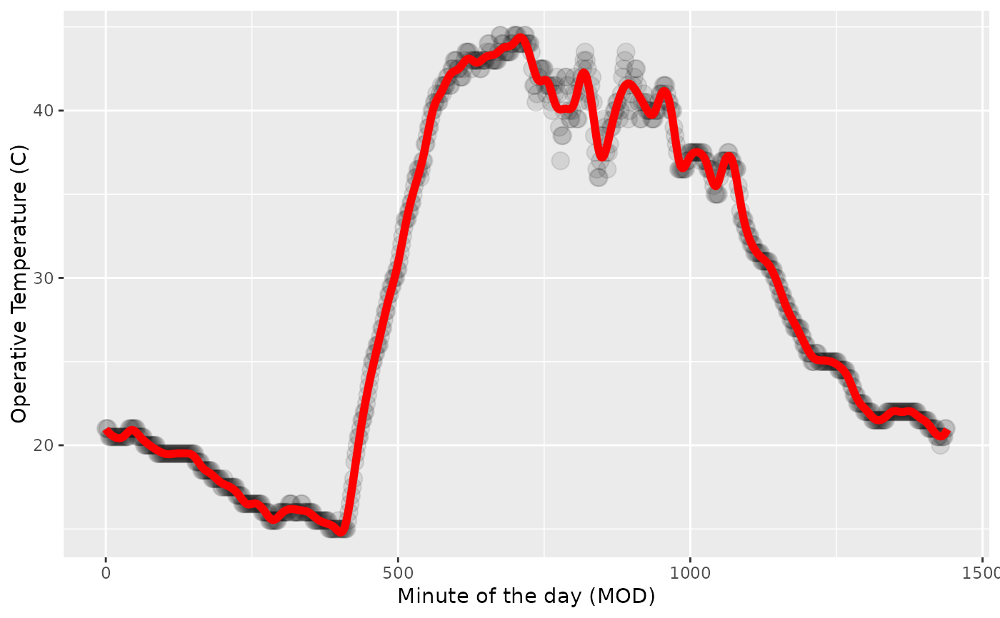

Generate OTM splines
gen_otm_splines.RdGenerate a unique spline model for each OTM on each date (Julian) while the OTM was measuring
Arguments
- otm_data
An OTM data
tibbleobtained via the functionrnp_otms_data. It must include columns describing the OTM id (otm_id), the day of the year (doy), the minute of the day (mod) in which each operative temperature measurement (op_temp) was made. The function can run withoutlatitudeandlongitudecolumns, but including them is necessary for thecorrect_flights_data,match_dataandpredict_thermal_landscapefunctions.- knot_p
The number of knots the spline model should have to describe the temperature dynamics of the OTM for a given day taken as a percentage of the total number of operative measurements in a given day.
Value
A complex tibble with columns for otm_id, year, doy and spline.
The spline column is nested and contains a OTM, year and DOY smooth.spline model
with the specified number of knots.
Examples
library(ggplot2)
`%>%` <- magrittr::`%>%`
# filter data for a specific OTM in a given doy
otm <- otms_data %>% dplyr::filter(get("otm_id") == "OTM12") %>%
dplyr::filter(get("doy") == 237)
# generate the spline model
otm_spline <- gen_otm_splines(otm_data = otm, knot_p = 1/7.5)
# obtain a prediction
pred <- tibble::tibble(mod = seq(0,1440,by = 1),
op_temp = predict(otm_spline$spline[[1]], seq(0,1440,by = 1))$y)
# plotting
ggplot2::ggplot() +
ggplot2::geom_point(data = otm, ggplot2::aes(x = mod, y = op_temp), size = 4, alpha = 0.1) +
ggplot2::geom_line(data = pred, ggplot2::aes(x = mod, y = op_temp), linewidth = 2, col = "red") +
ggplot2::xlab("Minute of the day (MOD)") +
ggplot2::ylab("Operative Temperature (C)")
